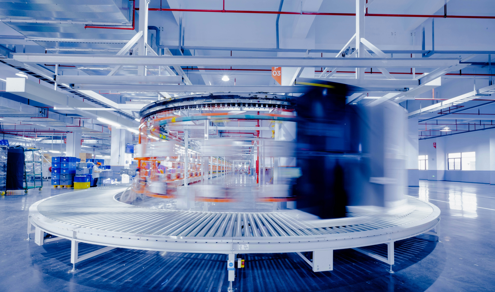

Knap Kapacitet
Knap kapacitet er et centralt begreb inden for virksomhedsøkonomi, der beskriver situationer, hvor virksomhedens ressourcer er begrænsede, hvilket skaber behov for prioritering og optimering af produktionen.
I dette kapitel fokuserer vi på:
- Produktionsplanlægning: Hvordan udarbejdes en optimal produktionsplan med de ressourcer, der er til rådighed her og nu?
- Identifikation af flaskehalse: Hvordan lokaliserer man de begrænsende ressourcer?
- Prioriteringsmetoder: Hvordan vælger man hvilke produkter, der skal produceres først?
- Dækningsbidrag pr. ressourceenhed: Hvordan maksimeres indtjeningen under de nuværende begrænsninger?
- Langsigtede løsninger: Hvordan kan flaskehalsproblemer løses på længere sigt?
Hvad er Knap Kapacitet?
Knap kapacitet opstår, når en virksomheds produktionsmuligheder begrænses af en eller flere ressourcer.
Dette kan være produktionsudstyr, maskintid, arbejdskraft, råvarer, lagerplads eller andre faktorer,
der sætter en øvre grænse for, hvor meget virksomheden kan producere.
Når kapaciteten er knap, handler
det primært om at lægge en optimal produktionsplan, der prioriterer de mest profitable produkter under
de nuværende begrænsninger.
Identifikation af Flaskehalse
En flaskehals er den ressource, der mest begrænser virksomhedens produktion. Det er afgørende at identificere de faktiske flaskehalse for at kunne optimere produktionen effektivt.
Sådan identificeres flaskehalse:
- Analyser kapacitetsudnyttelsen på tværs af produktionsprocessen
- Find områder med ophobning af arbejde eller lange ventetider
- Undersøg hvor der opstår forsinkelser i produktionsflowet
- Beregn kapacitetsudnyttelsesgraden for forskellige ressourcer
- Sammenlign efterspørgsel med tilgængelig kapacitet for hver ressource
| Branche | Typiske Flaskehalse | Konsekvenser | Tegn på flaskehalse |
|---|---|---|---|
| Produktion | Maskintid, specialudstyr | Længere leveringstider, overarbejde |
|
| Service | Specialiseret arbejdskraft | Lange ventetider, kvalitetsproblemer |
|
| IT | Udviklerressourcer, serverkapacitet | Forsinkede projekter, nedetid |
|
| Logistik | Transportkapacitet, lagerplads | Forsinkede leverancer, højere omkostninger |
|
Optimeringsmodeller ved Knap Kapacitet
Når en virksomhed står over for knap kapacitet, bliver det afgørende at prioritere produktionen for at maksimere dækningsbidraget her og nu. Den grundlæggende tilgang til produktionsplanlægning er at beregne dækningsbidraget pr. enhed af den knappe ressource for hvert produkt og prioritere derefter.
Trinvis produktionsplanlægning under knap kapacitet:
- Beregn dækningsbidrag (DB) for hvert produkt: Salgspris - Variable omkostninger
- Beregn ressourceforbrug for hvert produkt (hvor meget af den knappe ressource der bruges)
- Beregn DB pr. enhed af den knappe ressource: DB / Ressourceforbrug
- Opstil en produktionsrækkefølge prioriteret efter højest DB pr. ressourceenhed
- Allokér den knappe ressource til produkter i prioriteret rækkefølge indtil den er opbrugt
- Tag højde for eventuelle maksimale afsætningsmuligheder for hvert produkt
Bemærk: Denne prioriteringsmetode fokuserer på optimal udnyttelse af de ressourcer, der er til rådighed her og nu. Langsigtede løsninger kan omfatte kapacitetsudvidelse, men den kortsigtede produktionsplan må tage udgangspunkt i de nuværende begrænsninger.
Eksempel på prioritering af 3 produkter A, B og C under knap kapacitet
Her er den knappe ressource maskintid, og vi har følgende data for de 3 produkter:
| Produkt | Dækningsbidrag | Ressourceforbrug | DB pr. Ressourceenhed = DB/Ressourceforbrug | Prioritering |
|---|---|---|---|---|
| Produkt A | 1.000 kr. | 2 timer maskintid | 1.000/2 = 500 kr./time | 2. prioritet |
| Produkt B | 1.500 kr. | 4 timer maskintid | 1.500/4 = 375 kr./time | 3. prioritet |
| Produkt C | 800 kr. | 1 time maskintid | 800/1 = 800 kr./time | 1. prioritet |
Møbelfabrik-eksemplet
Lad os se på et konkret eksempel med en møbelfabrik, der illustrerer principperne for produktionsplanlægning ved knap kapacitet:
Case: Møbelfabrik med begrænset maskintid
En møbelfabrik har en begrænset kapacitet på 1.000 maskintimer om måneden. De producerer tre forskellige stole:
- Kontorstol: 2 timer maskintid, dækningsbidrag 1.000 kr., maksimal afsætning 150 stk.
- Spisestol: 1 time maskintid, dækningsbidrag 400 kr., maksimal afsætning 500 stk.
- Lænestol: 4 timer maskintid, dækningsbidrag 1.500 kr., maksimal afsætning 100 stk.
Vi kan udregne at vi ikke kan producere alt det vi kan afsætte, da vi kun har 1.000 maskintimer til rådighed.
Den samlede maskintid der skal bruges er:
150*2 + 500*1 + 100*4 = 1.200 timer.
Vi kan derfor ikke producere alt det vi kan afsætte, og vi har et knap kapacitets problem.
Vi skal derfor prioritere vores produktion.
Produktionsplanlægning - Trin 1: Beregn dækningsbidrag pr. maskintimetime:
- Kontorstol: 1.000 kr. / 2 timer = 500 kr./time
- Spisestol: 400 kr. / 1 time = 400 kr./time
- Lænestol: 1.500 kr. / 4 timer = 375 kr./time
Produktionsplanlægning - Trin 2: Prioriter produktion efter højest DB pr. ressourceenhed:
- Kontorstol: 500 kr./time (1. prioritet)
- Spisestol: 400 kr./time (2. prioritet)
- Lænestol: 375 kr./time (3. prioritet)
Produktionsplanlægning - Trin 3: Fordel maskintimerne baseret på prioritering:
- Kontorstole: 150 stk. × 2 timer = 300 timer (maksimal afsætning nået)
- Spisestole: 500 stk. × 1 time = 500 timer (maksimal afsætning nået)
- Lænestole: Resterende 200 timer / 4 timer pr. stk. = 50 stk.
Produktionsplan for den kommende måned:
- Producér 150 kontorstole (høj prioritet - højest DB pr. time)
- Producér 500 spisestole (mellemprioritet)
- Producér 50 lænestole (lavest prioritet)
Resultat af planlægningen:
- Kontorstole: 150 stk. × 1.000 kr. = 150.000 kr. DB
- Spisestole: 500 stk. × 400 kr. = 200.000 kr. DB
- Lænestole: 50 stk. × 1.500 kr. = 75.000 kr. DB
- Samlet dækningsbidrag: 425.000 kr.
Langsigtet løsning: Selvom den optimale produktionsplan maksimerer det kortsigtede dækningsbidrag, bør møbelfabrikken overveje langsigtede løsninger såsom investering i flere maskiner. Da DB for alle produkter overstiger 375 kr./time, ville en udvidelse af maskinkapaciteten være rentabel. Indtil da skal produktionen dog prioriteres som beskrevet ovenfor.
Excel løsningsforslag Møbelfabrik
Knap kapacitet Excel løsningsforslagReelle cases fra virksomheder
Knap kapacitet er en udfordring for virksomheder i alle brancher. Her ser vi på en række virkelige eksempler på, hvordan virksomheder håndterer produktionsplanlægning under knappe ressourcer:
| Virksomhed | Knap Ressource | Kortsigtet Produktionsplan | Langsigtet Løsning | Resultat |
|---|---|---|---|---|
| Tesla | Batterikapacitet | Prioritering af produktion af Model S/X (højere DB pr. batteri) over Model 3/Y | Byggede egne batterifabrikker (Gigafactory), investerede i batteriudvikling | Kortsigtet: Optimeret DB på +15%; Langsigtet: Øget kapacitet med 50% |
| LEGO | Produktionskapacitet | Prioriterede produktserier med højest DB pr. maskintimetime, begrænsede distribution af lavmarginsæt | Investerede 1 mia. kr. i ny fabrik i Vietnam, optimerede produktionslinjer | Kortsigtet: +8% DB; Langsigtet: Forøget kapacitet med 25% |
| Pandora | Kvalificeret arbejdskraft | Fokuserede produktion på højmargin smykkelinjer, udskød lancering af komplekse designs | Etablerede uddannelsesprogram, automatiserede dele af produktionen | Kortsigtet: +12% DB; Langsigtet: Reduceret medarbejderomsætning med 35% |
| Novo Nordisk | Produktionskapacitet for Wegovy | Prioriterede distribution til USA og strategisk vigtige markeder, rationerede forsyninger | Investerede 16 mia. kr. i udvidelse af produktionsfaciliteter i Kalundborg | Kortsigtet: +20% DB; Langsigtet: Fordobling af kapacitet inden 2025 |
| Maersk | Containerskibe | Prioriterede højmargin-kontrakter, øgede priser på spotmarkedet, omplanlagde ruter | Bestilte nye skibe, optimerede havneoperationer | Kortsigtet: Rekordhøj indtjening; Langsigtet: Øget flådekapacitet med 15% |
Optimeringsstrategier ved Knap Kapacitet
Der findes forskellige strategier til at håndtere knap kapacitet. Vi kan skelne mellem kortsigtede produktionsplanlægningsstrategier (som fokuserer på at optimere inden for de eksisterende begrænsninger) og langsigtede løsningsstrategier (som fokuserer på at udvide eller eliminere flaskehalse).
Fokus på produktionsplanlægning (kortsigtet):
- Prioriteringsmetoder:
- DB pr. ressourceenhed-metoden (som vist i møbelfabrik-eksemplet)
- Prioritering af strategisk vigtige kunder eller markeder
- Produktionsplanlægning baseret på ordrehistorik og leveringstid
- Just-in-time produktion for at minimere lageromkostninger
- Omstillingstidsminimering for at øge effektiv produktionstid
- Andre kortsigtede strategier:
- Prisjusteringer for at styre efterspørgsel væk fra flaskehalsprodukter
- Midlertidig outsourcing af dele af produktionen
- Overtidsarbejde eller ekstra skift ved flaskehalse
- Ændring af produktmix for at udnytte kapaciteten bedre
Langsigtede løsningsstrategier:
- Investering i ny produktionskapacitet
- Automatisering og teknologiudvikling
- Rekruttering og uddannelse af nøglemedarbejdere
- Vertikal integration (f.eks. opkøb af leverandører)
- Udvikling af alternative produktionsmetoder
Bemærk: Selvom langsigtede løsninger er vigtige for virksomhedens udvikling, er effektiv produktionsplanlægning afgørende for at maksimere indtjeningen i mellemtiden.
Servicevirksomheder og Knap Kapacitet
Principperne for produktionsplanlægning under knap kapacitet gælder ikke kun for produktionsvirksomheder. Servicevirksomheder står også ofte over for kapacitetsbegrænsninger, typisk i form af personaletid, fysisk plads eller udstyr:
Case: Tandlægeklinik med begrænset kapacitet
En tandlægeklinik har én tandlæge med 40 tilgængelige timer pr. uge. Klinikken tilbyder forskellige behandlinger:
- Tandeftersyn: 30 min, DB 450 kr., maksimalt 50 patienter/uge
- Tandrodbehandling: 120 min, DB 2.400 kr., maksimalt 10 patienter/uge
- Tandblegning: 60 min, DB 1.500 kr., maksimalt 20 patienter/uge
Produktionsplanlægning - Beregning af DB pr. time:
- Tandeftersyn: 450 kr. / 0,5 time = 900 kr./time
- Tandrodbehandling: 2.400 kr. / 2 timer = 1.200 kr./time
- Tandblegning: 1.500 kr. / 1 time = 1.500 kr./time
Produktionsplanlægning - Optimal timefordeling i den kommende uge:
- Tandblegning: 20 patienter × 1 time = 20 timer (højest DB pr. time, maksimalt nået)
- Tandrodbehandling: 10 patienter × 2 timer = 20 timer (næsthøjest DB pr. time, maksimalt nået)
- Tandeftersyn: Ingen tid tilbage
Resultat af planlægningen: Det samlede dækningsbidrag bliver 54.000 kr. ved at prioritere de mest profitable behandlinger først.
Langsigtet løsning vs. kortsigtet planlægning:
- Kortsigtet produktionsplanlægning: Prioritere høj-DB behandlinger og optimere tandlægens timeplan
- Langsigtet løsning: Ansætte endnu en tandlæge, uddelegere tandeftersyn til en tandplejer, udvide åbningstider
Bemærk at den kortsigtede produktionsplan er nødvendig selv mens man arbejder på langsigtede løsninger, da den sikrer optimal indtjening under de nuværende begrænsninger.
Excel løsningsforslag Tandlægeklinik
Knap kapacitet Tandlægeklinik Excel løsningsforslagSammenfatning
Knap kapacitet er en realitet for de fleste virksomheder og kræver systematisk produktionsplanlægning for at maksimere overskuddet.
Nøglebudskaber:
- Produktionsplanlægning under knap kapacitet handler primært om at prioritere produktion med de ressourcer, der er til rådighed her og nu
- Beregning af dækningsbidrag pr. enhed af den knappe ressource er det vigtigste værktøj til at prioritere mellem produkter
- En optimal produktionsplan følger prioriteringsrækkefølgen baseret på DB pr. ressourceenhed, med hensyn til maksimale afsætningsmuligheder
- Selvom langsigtede løsninger er vigtige, er effektiv produktionsplanlægning afgørende for at maksimere indtjeningen i mellemtiden
- Forskellige brancher og virksomhedstyper kan anvende de samme grundlæggende principper for produktionsplanlægning under kapacitetsbegrænsninger